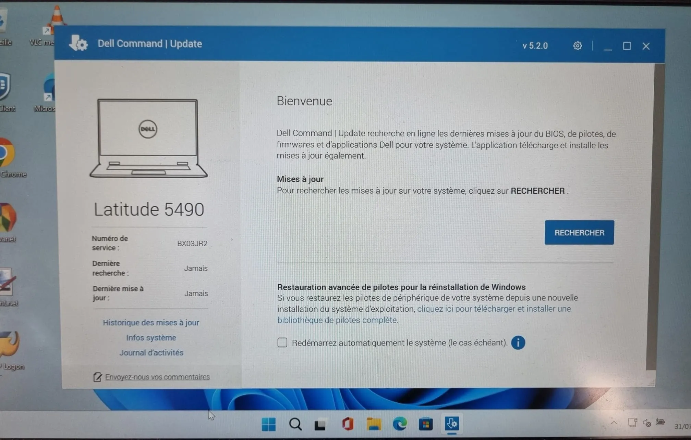
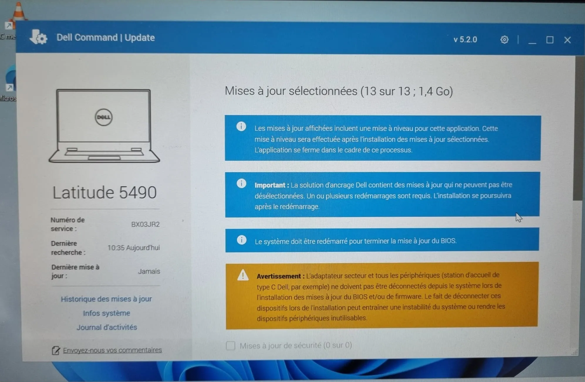
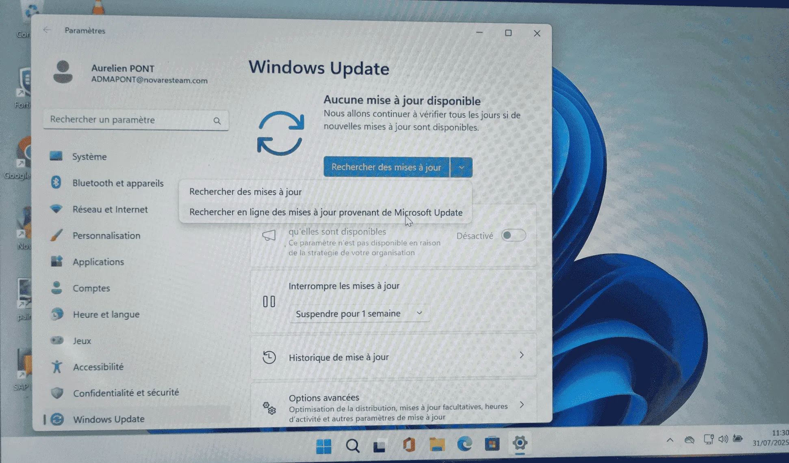
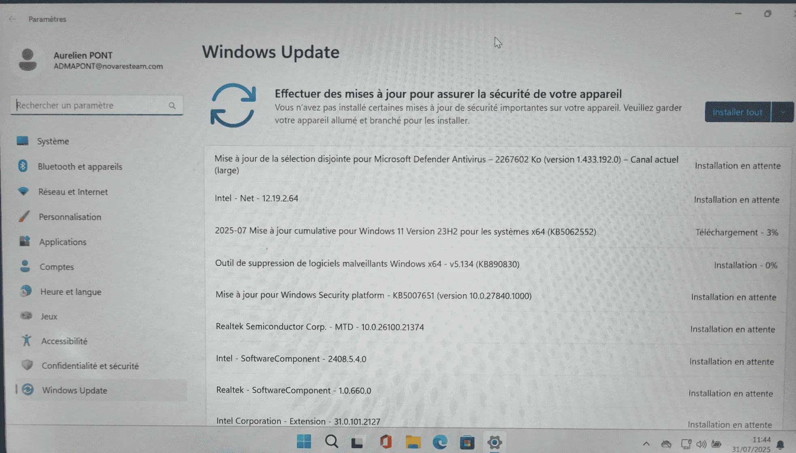
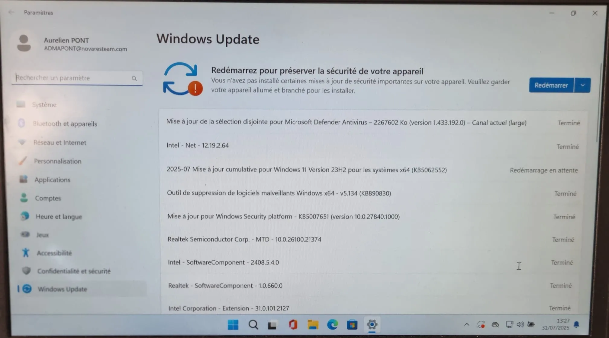

📋 Contexte de la procédure
Après un déploiement SCCM, cette procédure permet de vérifier et réaliser les mises à jour matérielles (Dell) et logicielles (Windows Update) avec les redémarrages nécessaires.
💻 Mises à jour Dell
Pilotes, firmware, BIOS
🪟 Windows Update
Mises à jour de sécurité
🔄 Redémarrages
Validation post-installation
⚙️ Procédure de mise à jour post-SCCM
Vérification des mises à jour Dell disponibles
Ouvrir l'application Dell Command Update ou accéder au support Dell pour vérifier les mises à jour disponibles.

Installation des mises à jour Dell
Sélectionner et installer toutes les mises à jour Dell critiques recommandées.

Vérification des Windows Update
Ouvrir les paramètres Windows et vérifier les mises à jour disponibles dans Windows Update.

Installation des Windows Update
Télécharger et installer toutes les mises à jour Windows disponibles.

Redémarrage et validation finale
Effectuer le redémarrage final et vérifier que toutes les mises à jour ont été correctement appliquées.

Vérifications post-redémarrage :
✅ Tous les périphériques fonctionnent correctement✅ Aucune erreur dans le Gestionnaire de périphériques
✅ Windows Update indique "À jour"
✅ Dell Command Update ne propose plus de mises à jour critiques